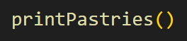

Javascript, HTML, and CSS
Javascript works with HTML and CSS to create the interactiveness and responsiveness of websites! Just as HTML is like your skeleton, and CSS your skin and hair, Javascript works as your nerves, allowing your webiste to repsond to the user, just as you to respond and interact to your environment.
Control flow and loops
Control flow is the order in which a program executes statements. Programming languages can be distinguished by either not needing to describe it's control flow, declarative programming (HTML, CSS), or having control flow statements, imperative programming such as in Javascript. Control flow statements let the program choose which path to take when going through a statement. One example of this is using loops. Loops tell our program to do something starting from a certain initial state, until a certain final state, and what to do each time we have been through the loop before restarting it.
In the above image, the loop is is seen between the yellow curly brackets. let i = 0 is the initial state, i < pastries.length is the final state, and i++ is what happens when we have been through a loop iteration. In the purple curly brackets is what is output for each loop
This can kinda be thought of as though you are cooking dinner, and need to chop 3 onions. Your initial start state is 0 chopped onions, your final state is 3 chopped onions, and after each onion you chop you can add it to the pot of chopped onions (until there are three chopped onions in the pot). Once you have done this, the loop is completed and you can more onto the next part of your code (or cooking!)
The DOM
DOM stands for document origin model. It is interacted with when using javascript through the console part of web pages. It's a data structure and programming interface with a hierarchical structure that your browser uses to make sense of everything going on. Everything that makes up your DOM is known as nodes - these are mostly just elements, but can be anything! The DOM isn't a programming language but without it javascript wouldn't have any model or notion of web pages etc..., but all of this can be accessed and manipulated using the DOM and a scripting language like javascript. The DOM is gateway to all the HTML elements that make up what you see on your website page and allows any change made in it using javascript to be reflected in what you see in your browser.
One example of how you might interact with the DOM is if you want to interact with elements (the bits of information such as headings or paragraphs in your HTML code) in the HTML file. First search for the HTML element using document.querySelector(id or class of thing you want to find). This will find the first element in the HTML file with the specified id. To find all of the element in the HTML file, document.querySelctorAll(id or class of thing you want to find) can be used. Examples document.querySelector('p') to find the first paragraph element in the HTML file. document.querySeclectorAll('.dom') to find all elements in the dom class.
Arrays and Objects
Objects are essentially a little container that we can store information in as keys and values. In the example above the keys are one, two, three, four, and the values are croissant, pain au chocolat, danish, and apple strudel.We are able to access the values in the object by calling the associated key. Arrays are similar to objects in that they are a container to store information, but they differ in that they store this information in a certain order. In order to access information in our array, we need to know the index position. In the above example, croissant is at index (i) 0, pain au chocolat at index 1, danish at index 2, and apple strudel at index 3.
Functions
Functions are an important part of Javascript that allows us to perfrom a task by taking an input and returning an output! They consist of the name of the function, any parameter(s) (can be seperated by commas if multiple), and relevant javascript statements that get the function to perform it's required task in the curly brackets (see picture below).
Functions are helpful are particularly helpful when you are wanting to avoid hardcoding steps in your code as they can be called upon multiple times within the program. Calling a function is done by typing the function out with any relevant arguments in ().
Avoiding hardcoding, or writing all your code for each individual part of your program inside every part of it, is important for organisation and readability of your program, as well as minimising errors. Once a function is tested and shown to work, it means that any debugging of issues, particularly in complex programs, can exclude checking functions. Functions also allow for easier changing and improving of code, as editing a function only has to happen in one spot, not everywhere the function might otherwise need to be written in the program.